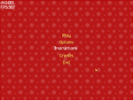

Пример 06 - Создание меню
Этот пример показывает, как создать собственный элемент управления и меню.

Создание пользовательских элементов управления
Сначала, мы должны определить класс нового элемента управления, наследованныц от hgeGUIObject:
class hgeGUIMenuItem : public hgeGUIObject
{
public:
hgeGUIMenuItem(int id, hgeFont *fnt, HEFFECT snd,
float x, float y, float delay, char *title);
virtual void Render();
virtual void Update(float dt);
virtual void Enter();
virtual void Leave();
virtual bool IsDone();
virtual void Focus(bool bFocused);
virtual void MouseOver(bool bOver);
virtual bool MouseLButton(bool bDown);
virtual bool KeyClick(int key, int chr);
private:
hgeFont *fnt;
HEFFECT snd;
float delay;
char *title;
hgeColor scolor, dcolor, scolor2, dcolor2, color;
hgeColor sshadow, dshadow, shadow;
float soffset, doffset, offset;
float timer, timer2;
};
Конструктор нового элемента управления должен инициализировать члены класса
hgeGUIObject:
id, bStatic, bVisible, bEnabled and rect:
hgeGUIMenuItem::hgeGUIMenuItem(int _id, hgeFont *_fnt,
HEFFECT _snd, float _x, float _y,
float _delay, char *_title)
{
id=_id;
fnt=_fnt;
snd=_snd;
delay=_delay;
title=_title;
color.SetHWColor(0xFFFFE060);
shadow.SetHWColor(0x30000000);
offset=0.0f; timer=-1.0f; timer2=-1.0f;
bStatic=false; bVisible=true; bEnabled=true;
float w=fnt->GetStringWidth(title);
rect.Set(_x-w/2, _y, _x+w/2, _y+fnt->GetHeight());
}
Метод Render, естественно, должен определить каждый элемент
управления:
void hgeGUIMenuItem::Render()
{
fnt->SetColor(shadow.GetHWColor());
fnt->Render(rect.x1+offset+3, rect.y1+3, title);
fnt->SetColor(color.GetHWColor());
fnt->Render(rect.x1-offset, rect.y1-offset, title);
}
Все остальные методы необязательы и вы можете не определять их, если они не нужны.
Метод Update вызывается каждый раз, когда обновляется GUI и должен
выполнять анимацию. В этом примере у нас есть два таймера и согласно им мы изменем цвет элемента
управления и его позицию:
void hgeGUIMenuItem::Update(float dt)
{
if(timer2 != -1.0f)
{
timer2+=dt;
if(timer2 >= delay+0.1f)
{
color=scolor2+dcolor2;
shadow=sshadow+dshadow;
offset=0.0f;
timer2=-1.0f;
}
else
{
if(timer2 < delay) { color=scolor2; shadow=sshadow; }
else {
color=scolor2+dcolor2*(timer2-delay)*10;
shadow=sshadow+dshadow*(timer2-delay)*10;
}
}
}
else if(timer != -1.0f)
{
timer+=dt;
if(timer >= 0.2f)
{
color=scolor+dcolor;
offset=soffset+doffset;
timer=-1.0f;
}
else
{
color=scolor+dcolor*timer*5;
offset=soffset+doffset*timer*5;
}
}
}
Метод Enter вызывается перед началом появления GUI на экране.
Конторл долден Начальную анимацю в нем:
void hgeGUIMenuItem::Enter()
{
hgeColor tcolor2;
scolor2.SetHWColor(0x00FFE060);
tcolor2.SetHWColor(0xFFFFE060);
dcolor2=tcolor2-scolor2;
sshadow.SetHWColor(0x00000000);
tcolor2.SetHWColor(0x30000000);
dshadow=tcolor2-sshadow;
timer2=0.0f;
}
Метод Leave вызывается, когда GUI начинает исчезать с экрана.
Элемент управления должне начать анимацию Окончания в этой функции:
void hgeGUIMenuItem::Leave()
{
hgeColor tcolor2;
scolor2.SetHWColor(0xFFFFE060);
tcolor2.SetHWColor(0x00FFE060);
dcolor2=tcolor2-scolor2;
sshadow.SetHWColor(0x30000000);
tcolor2.SetHWColor(0x00000000);
dshadow=tcolor2-sshadow;
timer2=0.0f;
}
Метод IsDone используется для проверки того, закончил ли элемент
управления свою анимацию Начала/Окончания. Когда анимация закончена, она должна вернуть значение true:
bool hgeGUIMenuItem::IsDone()
{
if(timer2==-1.0f) return true;
else return false;
}
Метод Focus вызывается когда элемент управления получает или теряет
фокус ввода. В нашем примере мы начинаем в этом методе анимацию получения фокуса:
void hgeGUIMenuItem::Focus(bool bFocused)
{
hgeColor tcolor;
if(bFocused)
{
hge->Effect_Play(snd);
scolor.SetHWColor(0xFFFFE060);
tcolor.SetHWColor(0xFFFFFFFF);
soffset=0;
doffset=4;
}
else
{
scolor.SetHWColor(0xFFFFFFFF);
tcolor.SetHWColor(0xFFFFE060);
soffset=4;
doffset=-4;
}
dcolor=tcolor-scolor;
timer=0.0f;
}
Метод MouseOver вызывается, чтобы оповестить элемент управления
о том, что курсор мыши вошел или вышел из области элемента управления. Здесь мы просто устанавливаем
фокус ввода на наш элемент управления, когда курсор проходит над ним:
void hgeGUIMenuItem::MouseOver(bool bOver)
{
if(bOver) gui->SetFocus(id);
}
Метод MouseLButton оповещает элемент управления о том, что
состояние левой кнопки мыши изменилось. Если элемент управления меняет свое состояние и хочет
оповестить об этом вызвавшего, он должен вернуть значение true:
bool hgeGUIMenuItem::MouseLButton(bool bDown)
{
if(!bDown)
{
offset=4;
return true;
}
else
{
hge->Effect_Play(snd);
offset=0;
return false;
}
}
Метод KeyClick вызывается, чтобы оповестить элемент управления о
том что была нажата клавиша. Если элемент управления меняет свое состояние и хочет оповестить
вызывавшего, он должен вернуть значение true:
bool hgeGUIMenuItem::KeyClick(int key, int chr)
{
if(key==HGEK_ENTER || key==HGEK_SPACE)
{
MouseLButton(true);
return MouseLButton(false);
}
return false;
}
Отлично, теперь нам надо определить поведение нашего нового элемента управления.
Использование GUI
Это легкая часть. Сначала нам нужны некоторые идентификаторы ресурсов:
HEFFECT snd;
HTEXTURE tex;
hgeGUI *gui;
hgeFont *fnt;
hgeSprite *spr;
В функции WinMain, во время инициализации нам нужно загрузить требуемые ресурсы:
snd=hge->Effect_Load("menu.wav");
tex=hge->Texture_Load("cursor.png");
fnt=new hgeFont("font1.fnt");
spr=new hgeSprite(tex,0,0,32,32);
Теперь мы можем создать GUI и добавить наши пункты меню туда. Элементы управления GUI управляются
изнутри библиотеки и можно не сохранять указатели на них:
gui=new hgeGUI();
gui->AddCtrl(new hgeGUIMenuItem(
1,fnt,snd,400,200,0.0f,"Play"));
gui->AddCtrl(new hgeGUIMenuItem(
2,fnt,snd,400,240,0.1f,"Options"));
gui->AddCtrl(new hgeGUIMenuItem(
3,fnt,snd,400,280,0.2f,"Instructions"));
gui->AddCtrl(new hgeGUIMenuItem(
4,fnt,snd,400,320,0.3f,"Credits"));
gui->AddCtrl(new hgeGUIMenuItem(
5,fnt,snd,400,360,0.4f,"Exit"));
Теперь установим метод навигации GUI, изображение курсора мыши и фокус ввода по умолчанию, затем
запустим Начальную анимацию:
gui->SetNavMode(HGEGUI_UPDOWN | HGEGUI_CYCLED);
gui->SetCursor(spr);
gui->SetFocus(1);
gui->Enter();
Сейчас давайте посмотрим, как мы обновляем наше меню и получаем нотификации. В нашей функции кадра
(FrameFunc) мы вызываем метод hgeGUI::Update для обновления
анимации и обработки ввода пользователя. Если элемент управления изменил свое состояние, этот метод
вернет идентификатор элемента управления. Если все элементы закончат свои анимации Окончания, она
вернет значение -1. Если неслучится ничего интересного, вернется значение 0.
int id;
static int lastid=0;
float dt=hge->Timer_GetDelta();
id=gui->Update(dt);
if(id == -1)
{
switch(lastid)
{
case 1:
case 2:
case 3:
case 4:
gui->SetFocus(1);
gui->Enter();
break;
case 5: return true;
}
}
else if(id) { lastid=id; gui->Leave(); }
Для того, чтобы нарисовать меню просто вызовем метод hgeGUI::Render:
hge->Gfx_BeginScene();
gui->Render();
hge->Gfx_EndScene();
Итак, меню запущено и работает. Теперь вернемся к функции WinMain.
В конце мы должны удалить GUI и освободить ресурсы:
delete gui;
delete fnt;
delete spr;
hge->Texture_Free(tex);
hge->Effect_Free(snd);
Полный исходный код с детальными комментариями для этого примера можно найти в директории tutorials\tutorial06.
Требуемые медиа фалы можно найти в директории tutorials\precompiled.
|